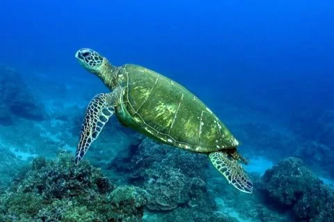
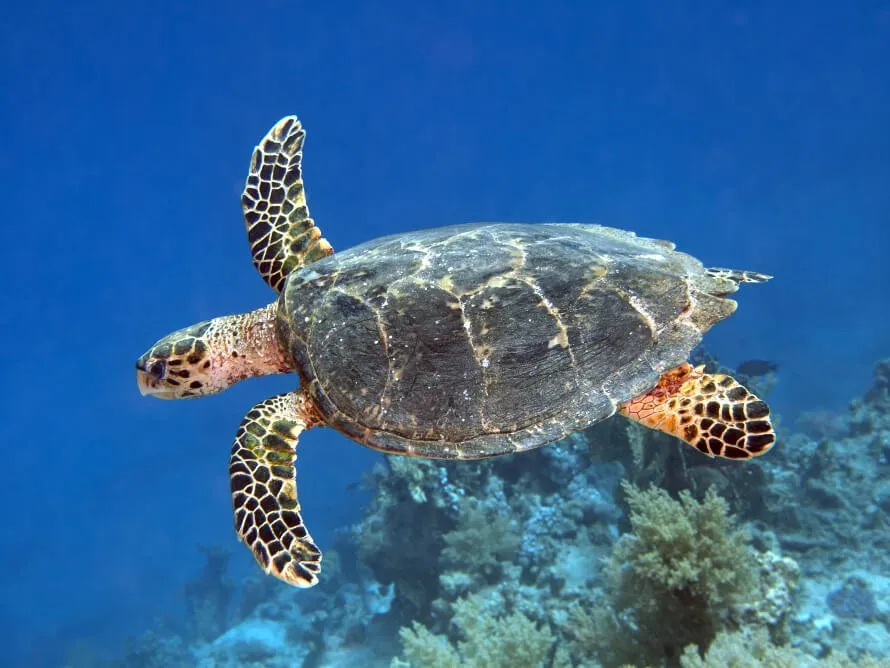
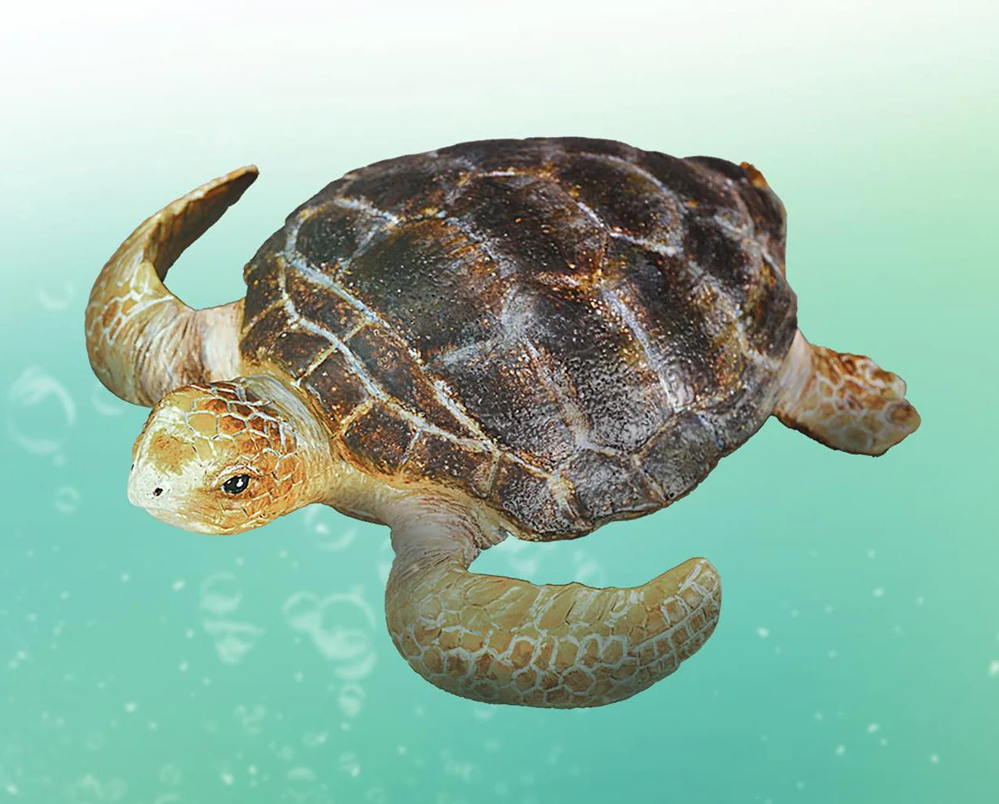

Sri Lankan waters are home to 5 of the 7 species of marine turtles.
They are:
- Green Turtle (Chelonia mydas)
- Olive Ridley (Lepidochelys olivacea)
- Hawksbill (Eretmochelys imbricata)
- Loggerhead (Caretta caretta)
- Leatherback (Dermochelys coriacea)
Also 3 species of freshwater turtles can also be found in Sri Lanka.
- Parker’s Black Turtle (Melanochelys trijuga pakeri)
- Sri Lanka Black Turtle (Melanochelys trijuga thermalis)
- Soft or Flapshell Turtle (Lissemys punctata punctata)
Green Turtle
The Green turtle is the most commonly found turtle in Sri Lanka. It is one of the largest known sea turtles and it
gets its name from the green colour fat found in the layers under its shell.This turtle can be recognized by its tear shaped shell
that is blackish grey in colour and a pair of large paddle like flippers. These turtles can be found mainly in the tropical
waters of the ocean.They only feed on marine vegetation(algae and sea grass). The adult Green turtles weigh between 68kg to 190kg
while exceptional species weighing about 315kg. These turtles are considered as endangered species today.

Olive Ridley Turtle
Thses turtles are found in the warm waters of the Indian Ocean. They are relatively small amd has a black heart
shaped upper exoskeleton that turns olive green in adulthood. Their length avergaes in 60-70cm and their weight doesn't exceed 50kg.
The Olice Ridely turtles are found most most abundantly comes ashore in a unique phenomenon known as “arribada”
(arribada-large group of females come all at once to nest). They have an averag lifespan of 50 years and they feeds mainly on
jellyfish shrimp, mollusks and fish.

Hawksbill Turtle
The Hawksbill turtles are listed as critically endagered by the World Conservation Union beacause it is commercially
valuable and is hunted for its beautiful "tortoise shell". It has a dark golden brown colour with redish orange streaks
and its most distinctive feature is the thick scutes that make up its upper shell. In size this turtle is small to medium and
has an elongated head that tapers into a pointed hawk-like beak. These turtles can be mainly found in coral reefs and shallow
lagoons and it mainly feeds on sponges, fish, sea anemones and jellyfish.

Loggerhead Turtle
These turtles are mostly found in salt water sometimes 100 of miles out in the ocean and also in estuarine habitats
(bays, lagoons and salt marshes). These turtles have a slightly heart shaped top shell,a relatively large head and a reddish brown
in colour. The adult turtle is approximately 3 feet and weighs aroung 113kg. The female turtles comes ashore momentarily for nesting.
The lifespan of these turtles are approximately around 50 years.

Leatherback Turtle
They are the largest of all living turtles and fourth heaviest modern day reptile. Its recognizable feature is that it has a
large greyish-black teardrop shaped body covered by skin and oily flesh. It aslo has seven prominent ridges that run from front to
the back of its body. This turtle grows upto 7 feet and weighs over 900kg. This turtle has a large pair of front flippers for it to
move strongly through the water. It feeds mainly on jellyfish and other small sea animals.

Parker’s Black Turtle
They are found throughout the lowlands and are quite common in most still water bodies and most waterways within
national parks and sanctuaries. These turtles are found in in city of Colombo and most marshes and waterways and are also found
in lake Kandy, Udawattekele sanctuary, Koslanda, Mannar island, Jaffna Peninsula and at fresh water bodies at Wilpattu.

Sri Lanka Black Turtle
These turtles widespread in lowland wet and dry zones. It is omnivorous and acts a scanvenger. These turtles spend
many hours basking during the daytime and for ages at night.

Soft or Flapshell Turtle
These turtles are endemic to Sri Lanka and found in lowlands throughout the country. They are also common in tanks,
ponds and other stagnant water bodies of all dry zone national parks and sanctuaries. These turtles pray on small aquatic
creatures and play an important role in keeping watreways clean by scavenging on most rotting material, bodies of dead animals,
snails, etc.

|
|
| Name of the turtle specie |
Places where the turtle can be found in Sri Lanka |
Distinct Features of the specie |
Picture of the turtle specie |
| Green Turtle |
- Southern coast
- West Coast
- Eastern Coast
|
- Green colour fat found in the layers under its shell
|
 |
| Olive Ridely Turtle |
|
- Black heart shapped upper exoskeleton(turns olive green in adulthood)
|
 |
| Hawksbill turtle |
- Pigeon Island national Park
|
- Elongated head that tapers into a pointed hawk-like beak
|
 |
| Loggerhead turtle |
- South shore
- South East shore
- Kosgoda
|
|
 |
| Leatherback turtle |
- Kosgoda
- Mawolla
- Rekawa beach
|
- Large greyish black teardrop covered body
|
 |
| Parker's Black Turtle |
- Colombo city
- Most marshes and waterways
- Lake Kandy
- Small tank inside the Udawattekele sanctuary
- Koslanda
|
|
 |
| Sri Lanka Black Turtle |
- Koslanda
- Mannar Island
- Jaffna peninsula
- Dry zone national parks
- Fresh water bodies at Wilpattu
|
|
 |
| Soft or Flapshell Turtle |
- Water bodies close to colombo(Attidiya, Talangama and Kotte marshes)
|
|
 |
| SUMMARY OF DIFFERENT TURTLE SPECIES IN SRI LANKA |